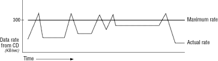

This section discusses:
streamblocksize command. When specifying streamblock size,
follow these general rules:

Figure 3: Data rate spikes.
Using more buffers to prevent starving
buffers
The main activity of a program that uses streaming is to fill empty
buffers with data, hand the data off to subscribers, and empty the buffers
after the data have been played (see DataStreamer threads and data flow). If
data are not placed in a way that prevents bunching up in the buffers, the
program may suddenly find no empty buffers in which to place the data, or
no data in the buffers it wants to use for playback. Having more buffers
makes it easier to process the data as they arrive.
The DataStreamer cannot reuse a stream buffer until it receives a reply for every chunk of data it has sent to subscribers. In the table below, the SCEL chunk at time 1000 has a duration of 1200 (five seconds). As a result, the stream buffer that contains the SCEL chunk is unavailable for reuse until the SCEL subscriber has replied that chunk has been played. Five seconds pass before the streamer can refill the buffer.
Table 8: Chunks in one stream buffer which have different duration. --------------------------------------------------------- Type |Time |Duration --------------------------------------------------------- SNDS |1000 |80 --------------------------------------------------------- SCEL |1000 |1200 --------------------------------------------------------- SNDS |1163 |80 --------------------------------------------------------- SNDS |1243 |80 ---------------------------------------------------------
To avoid the problem of starving buffers, consider working with the SCEL subscriber or Text subscriber. They allow for a stream header flag that copies a specified chunk out of the stream buffer. You can also use them as sample programs for your own customized subscriber. See the Attic folder for more information.